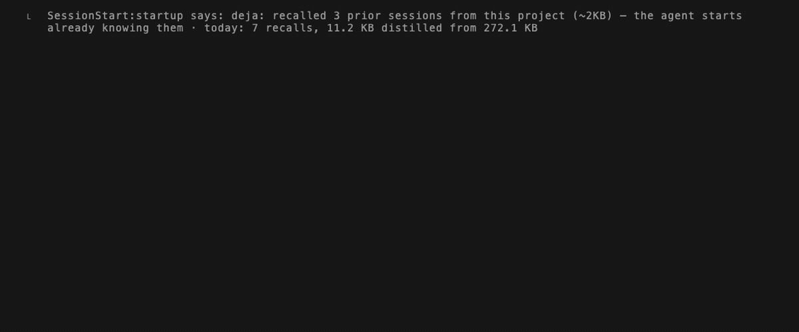

Adding memory to oh-my-claudecode
cross-session and cross-agent recall for OMC orchestration inside Claude Code
oh-my-claudecode (OMC, also run via the omc CLI) orchestrates multi-agent runs inside Claude Code. Because OMC runs on top of Claude Code, each subagent invocation starts fresh and sees neither yesterday's orchestrator run nor fixes already settled in Codex, Cursor, or opencode. Pairing OMC with deja gives every spawned session searchable access to prior work.

same prompt before and after deja — local BM25 recall across past sessions on disk, zero LLM calls
Where OMC transcripts already live
OMC sessions write standard Claude Code JSONL transcripts under ~/.claude/projects/, while OMC keeps its own configuration in ~/.claude/.omc-config.json and rules in ./.claude/CLAUDE.md or ~/.claude/CLAUDE-omc.md. deja indexes Claude Code's transcript tree directly — alongside the other forty-seven harnesses on the machine — without modifying your OMC setup or touching CLAUDE.md (why rules files grow).
Adding recall alongside OMC
deja install claude-auto
If OMC works next to Codex, Cursor, or other harnesses, wire all installed tools at once:
deja install --auto
On Claude Code, that registers the deja MCP server (recall, fix, blame, how, orient, context, remember, handoff), the deja-history skill, the /deja slash command, and the host lifecycle hooks (SessionStart, UserPromptSubmit, PreToolUse, PostToolUse, PreCompact, SessionEnd). Reversible with deja uninstall claude-auto.
What changes in a multi-agent run
- Fresh worker cold starts: new OMC runs receive a compact project digest and relevant past fixes without bloating your system prompt or
CLAUDE-omc.md. - Repeated shell errors and file context: before reading or editing a file,
PreToolUsesurfaces prior decisions recorded on that path; after a failed test or build command,PostToolUsereturns the command that resolved the same failure before. - Compaction survival and handoffs:
PreCompactcarries active state past context resets, andhandoffreads recent context produced by another harness on the same repo.
Local and scrubbed
The local BM25 store at ~/.cache/deja/index.db covers all forty-eight agent formats on the machine, including historical transcripts recorded before installing deja. Everything stays on disk, and tokens and credentials are scrubbed as transcripts are indexed.
Repository memory & handoff
Share vetted project decisions and dead ends through git in .deja/memory.jsonl (deja repo candidates, deja repo add <id>). Entries are redacted on write, stored sorted with merge=union so parallel branches merge cleanly, and loaded for any teammate who clones the repository ({"activations":{"auto":{"repo":false}}} in the trust policy keeps them out of hooks). See repo memory.
Switching tools mid-task? Run deja handoff --to <agent> (or use handoff via MCP) to transfer the active session's goal, decisions, touched files, passed checks, and open work into another coding agent.
Claude Code setup · Parallel sessions · Getting started · The Claude Code session format
Found this useful? Star deja-vu on GitHub.